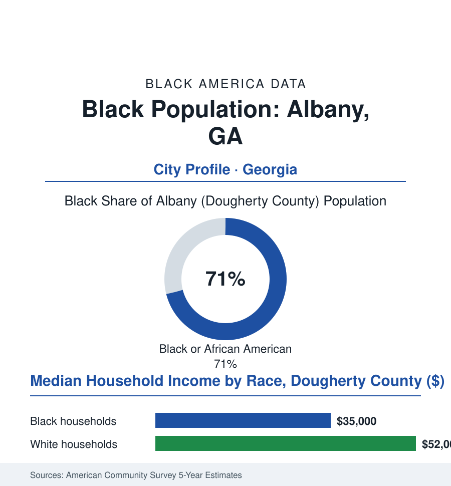

Black Cities
Black Albany: 48,000 People in Southwest Georgia's Capital
Albany is the anchor city of Georgia's Black Belt southwest — an HBCU town, a movement landmark, and a flood-scarred river city holding its region's Black majority together.

Albany's Black community numbers roughly 48,000 people — about 71% of Dougherty County's 85,000 residents in the city and its immediate ground — in the heart of southwest Georgia's plantation belt, a day's geography from any interstate's mercy. It is a small city with an outsized file: an HBCU, a Marine logistics base, a famous movement campaign, and two catastrophic floods in its modern record. This article reads Albany's numbers. Ask the region where its capital is, and no one names Atlanta.
The Belt's Anchor
Albany exists because the Flint River and the cotton kingdom needed a depot, and its Black majority is the plantation region's demography carried forward — the surrounding counties of Georgia's Black Belt (among the most heavily Black rural counties in America, the Delta file's Georgia chapter) treating Albany as their capital: its hospital their referral center, its Albany State University their college, its retail their Saturday. The city's own institutions are the region's: Albany State, founded 1903 as the Albany Bible and Manual Training Institute (an HBCU whose merger with Darton State in the university system's consolidation made it one of Georgia's larger Black universities, its nursing and teacher programs the belt's professional pipeline, its flood survival — the campus rebuilt after the waters — its modern founding story), the Marine Corps Logistics Base at the city's edge (the federal employer whose payroll steadies the region as Warner Robins steadies Macon's), and the movement heritage that made the city's name a chapter in the national canon (the Albany Movement of the early 1960s — the mass campaign whose lessons about goals and mass arrests the historians still teach, its local leaders, the Sherrods among them, remaining in the region to build the land-retention and cooperative work that the farmers file counts as the movement's longest local legacy). The churches and the Black press of the Southwest Georgian complete the institutional shelf of a city that has functioned, for a dozen counties, as a capital without a capitol.
Water, Wages, and the Anchor's Strain
The modern data carry a city's double exposure — to water and to the regional economy's thinness: the floods first in the record's emotional geography (the Flint's catastrophic rises of the 1990s, among the worst urban flood disasters in the modern South — thousands of homes, the cemetery moved, whole Black neighborhoods inundated in the floodplain geography that the housing file recognizes nationally: the lowest land, the oldest Black settlement, the river's revenge — and the recovery's decades-long tail in the buyout lots and the still-rebuilding blocks), and the economy's strain behind it (the manufacturing anchors thinned across the recent decades, the Black median household income in the mid-thirty-thousands, poverty around three in ten residents in the survey years — the metro ranking among the nation's poorest in the statistical releases that Albany's leaders contest and cannot make untrue). The counterweights are the anchor institutions' stubbornness: the base's mission holding, the university's enrollment and health programs growing into the region's provider shortage, the hospital system's consolidation under Phoebe Putney (the regional medical power whose nonprofit governance became a national antitrust case — the Supreme Court's Phoebe Putney decision taught in law schools, its origin a fight over this small city's hospital board), and the downtown's incremental revival in the riverfront plans. The demographic curve is the file's open question: the county's population slipping in the recent censuses as the region's young leave for the metros — the return-migration data's Albany chapter not yet written — the city's Black majority, in other words, as rooted as any in this atlas and as exposed as any to the arithmetic of a region whose economics have never matched its history.
Reading Albany's Numbers
Seventy-one percent Black, the capital of a Black Belt, holder of a movement chapter and a university and a river that has twice tried to take it back: Albany is the cities file's argument that significance is not a function of size. Its numbers are published in the same tables as the metropolises'. Its people read them as what they are — the ledger of a region's capital, still standing, defiantly, at its post.
More in Black Cities
Black Atlanta: Population, Distribution, and Growth of a Black Metropolis
Metro Atlanta holds more than two million Black residents — roughly one in three, second only to New York. The suburban distribution, migration history, and composition of Black Atlanta in the census data.
Black New York: The Largest Black Population in America
The New York metropolitan area holds about 3.4 million Black residents — more than any metro in the nation — and the city itself about two million. The census profile.
Black Washington: The District and the Metro
The Washington metro holds about 1.6 million Black residents, and the District itself — long a majority-Black city — now records a Black share near 41 percent. The census profile.
Source: U.S. Census Bureau, 2020 Census and American Community Survey 5-year estimates; City of Albany and Dougherty County; Albany State University; U.S. Army Marine Corps Logistics Base Albany data.